| 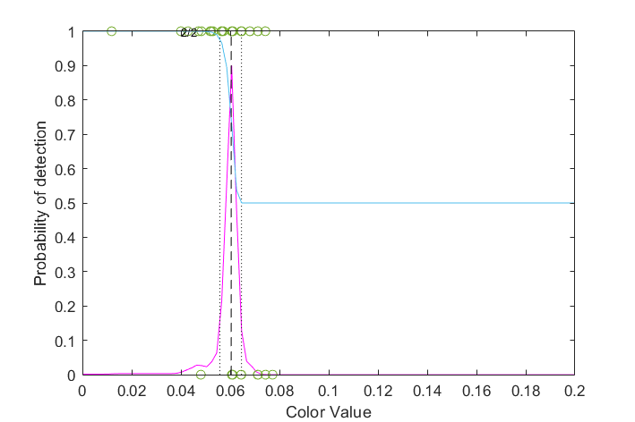
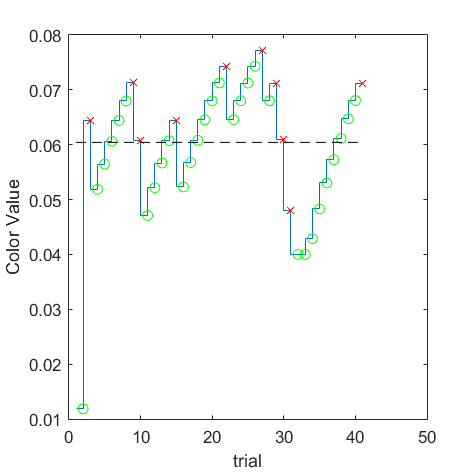
(VRR_Frequency=10/Size_Degree=0.5) = 0.0604115 | 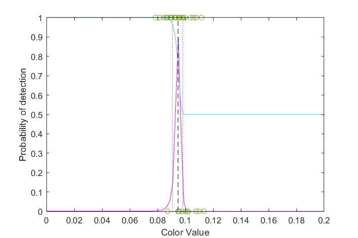
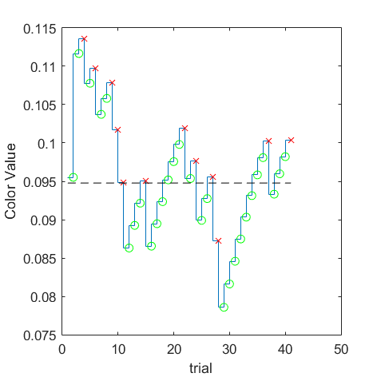
(VRR_Frequency=10/Size_Degree=1) = 0.0947804 | 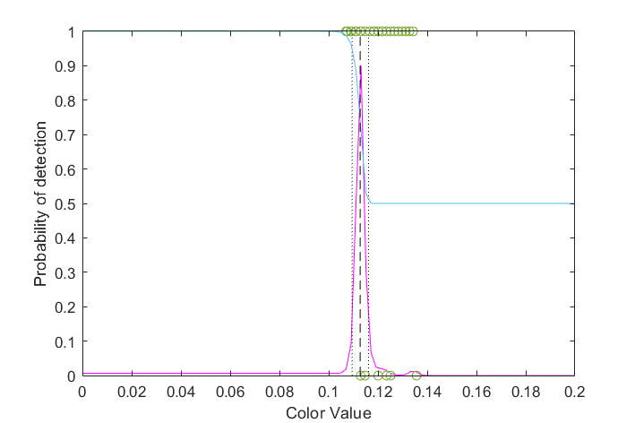
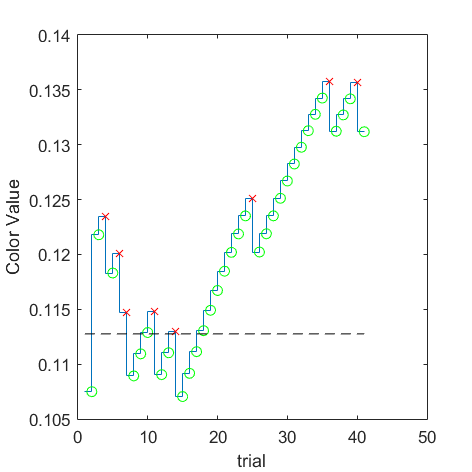
(VRR_Frequency=10/Size_Degree=16) = 0.112763 | 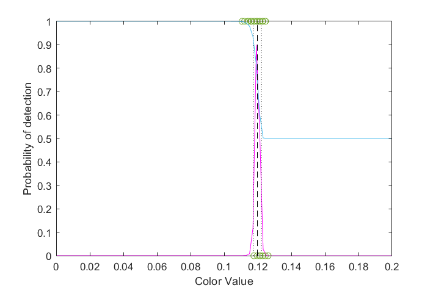
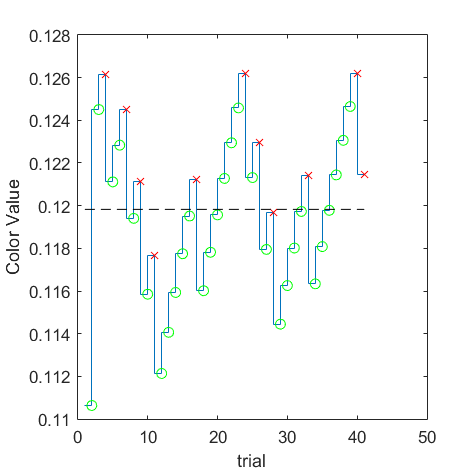
(VRR_Frequency=10/Size_Degree=full) = 0.119826 | ||||
| 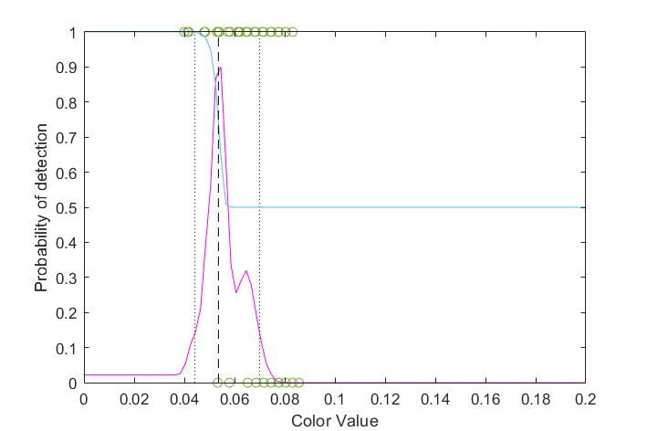
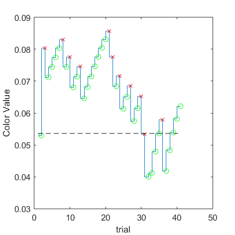
(VRR_Frequency=12/Size_Degree=0.5) = 0.0536022 | 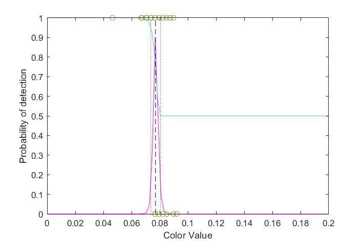
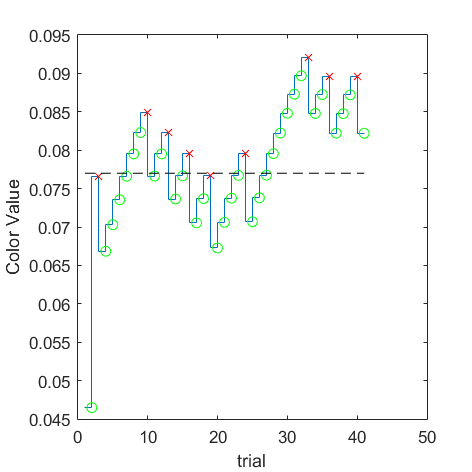
(VRR_Frequency=12/Size_Degree=1) = 0.076993 | 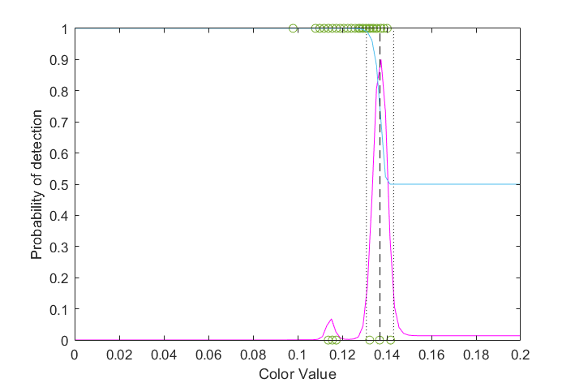
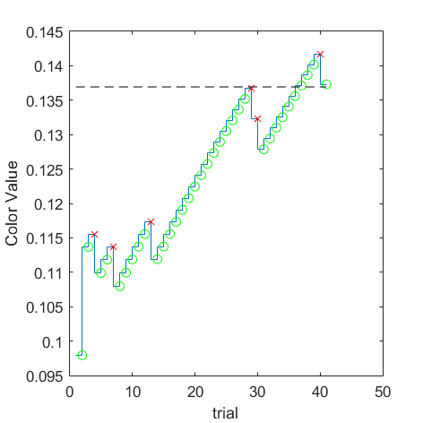
(VRR_Frequency=12/Size_Degree=16) = 0.136927 | 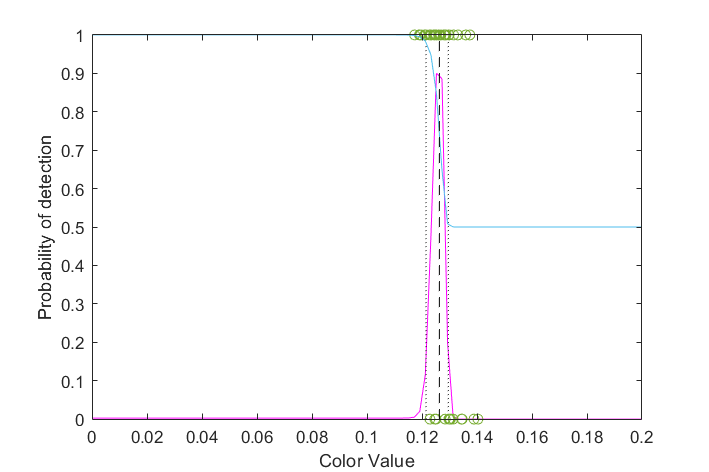
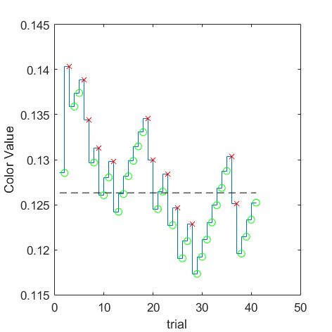
(VRR_Frequency=12/Size_Degree=full) = 0.126324 | ||||
| 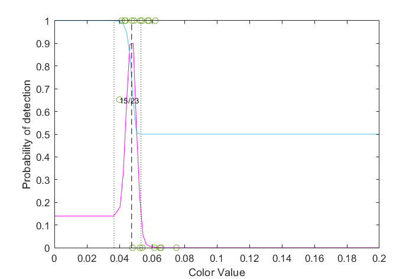
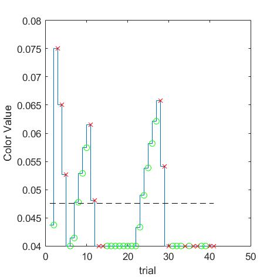
(VRR_Frequency=14/Size_Degree=0.5) = 0.0475581 | 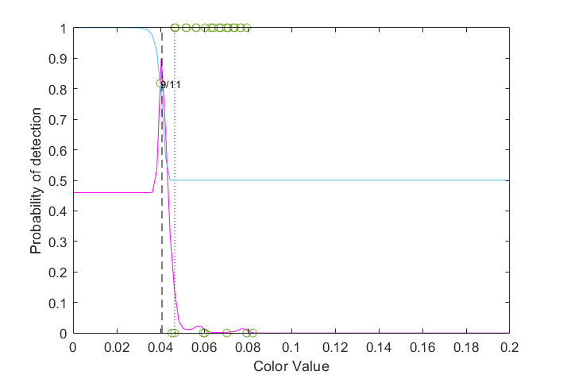
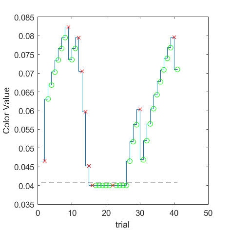
(VRR_Frequency=14/Size_Degree=1) = 0.0407136 | 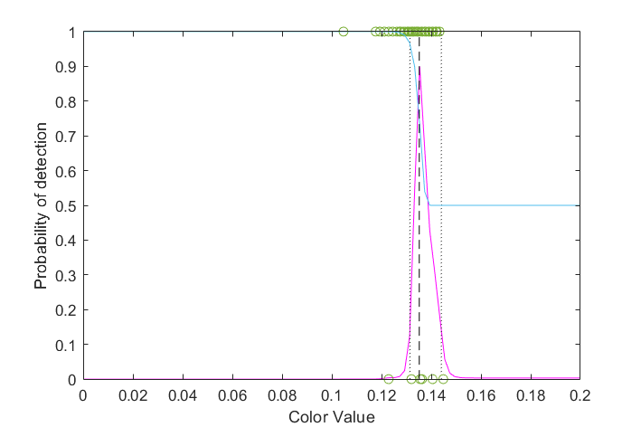
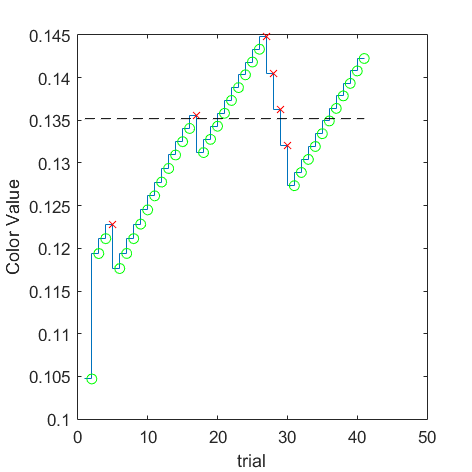
(VRR_Frequency=14/Size_Degree=16) = 0.135199 | 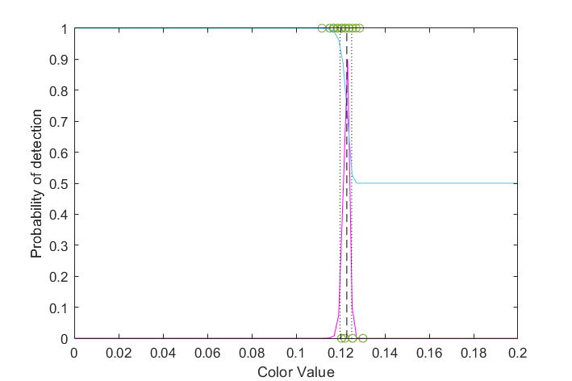
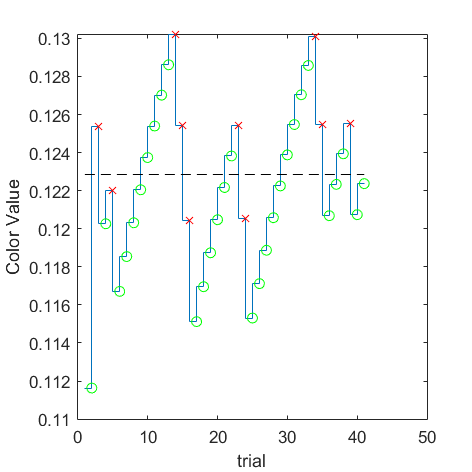
(VRR_Frequency=14/Size_Degree=full) = 0.12285 | ||||
| 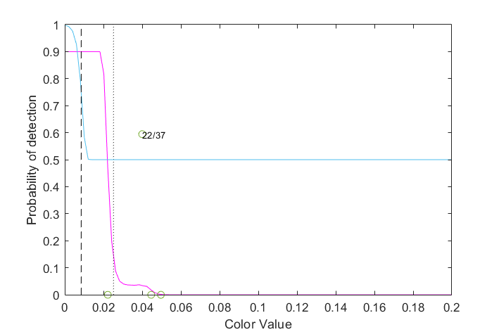
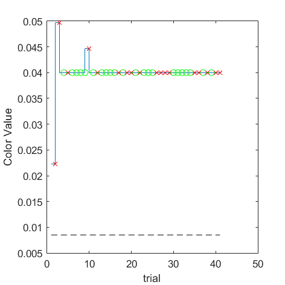
(VRR_Frequency=16/Size_Degree=0.5) = 0.00851066 Skipped measurement | 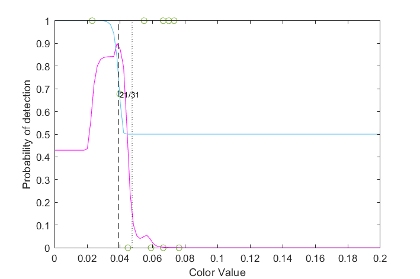
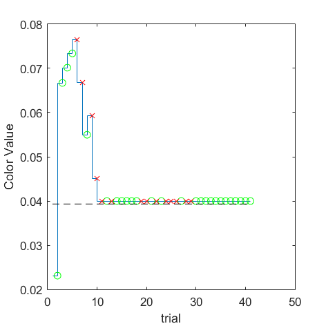
(VRR_Frequency=16/Size_Degree=1) = 0.0393286 | 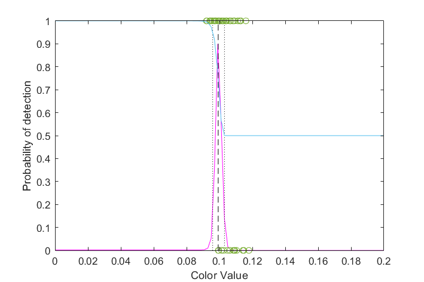
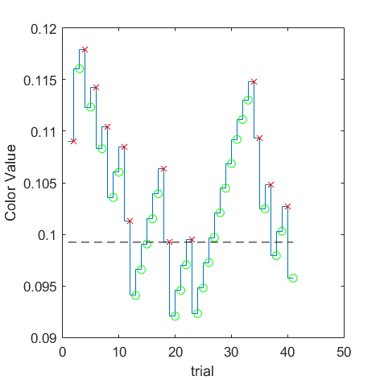
(VRR_Frequency=16/Size_Degree=16) = 0.0992294 | 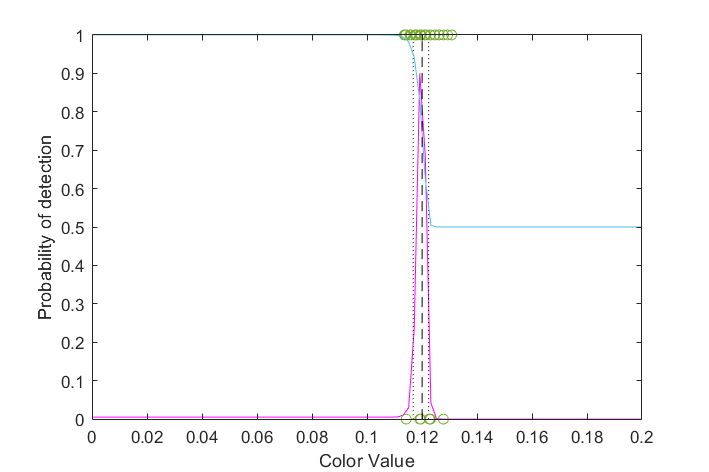
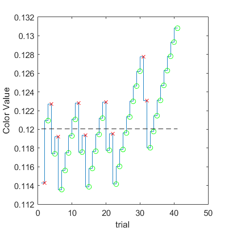
(VRR_Frequency=16/Size_Degree=full) = 0.120056 |